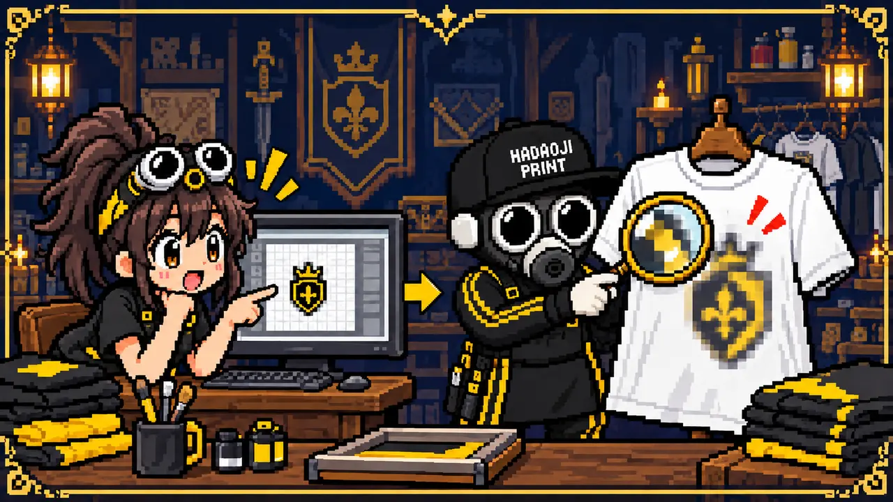
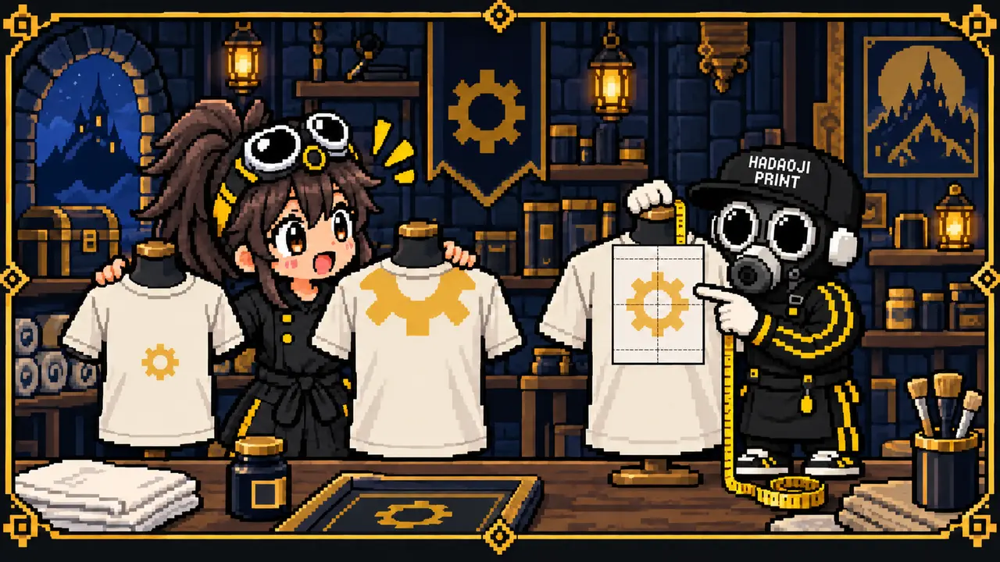
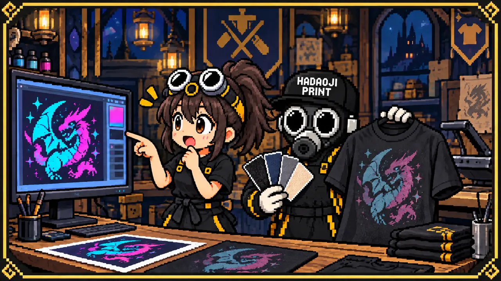
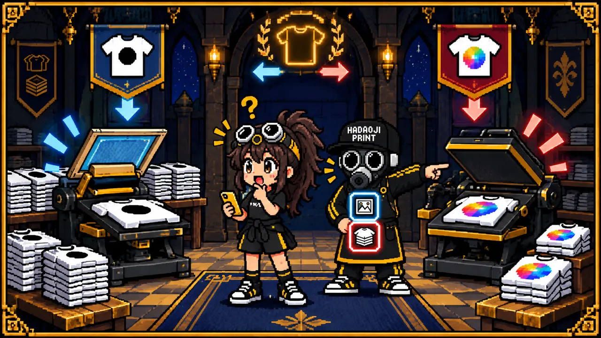
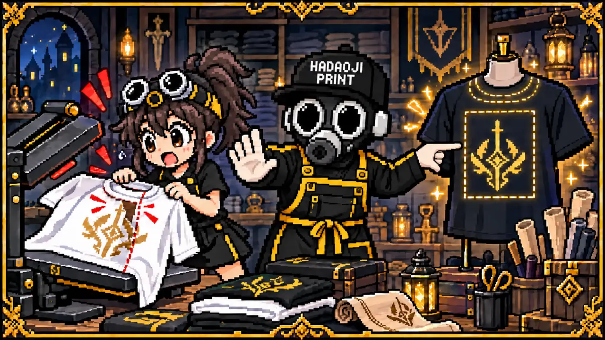
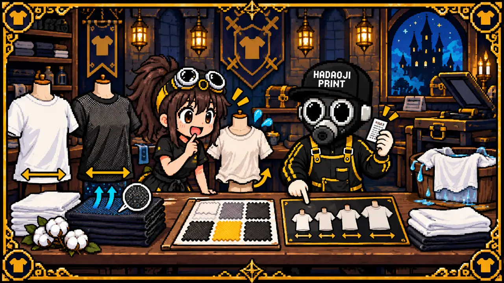
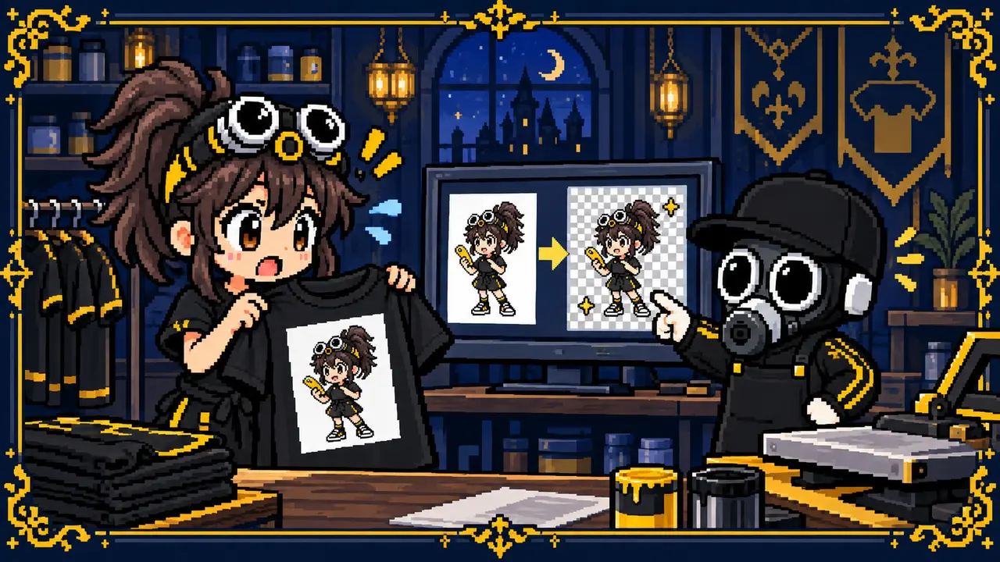
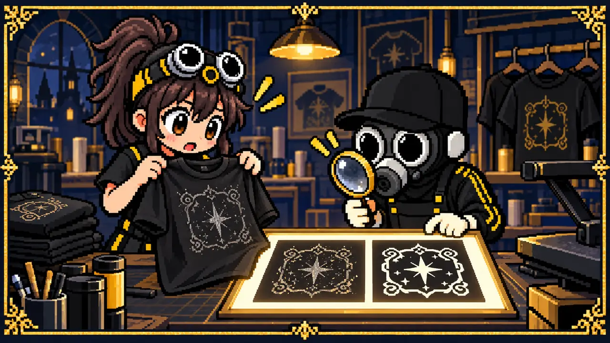
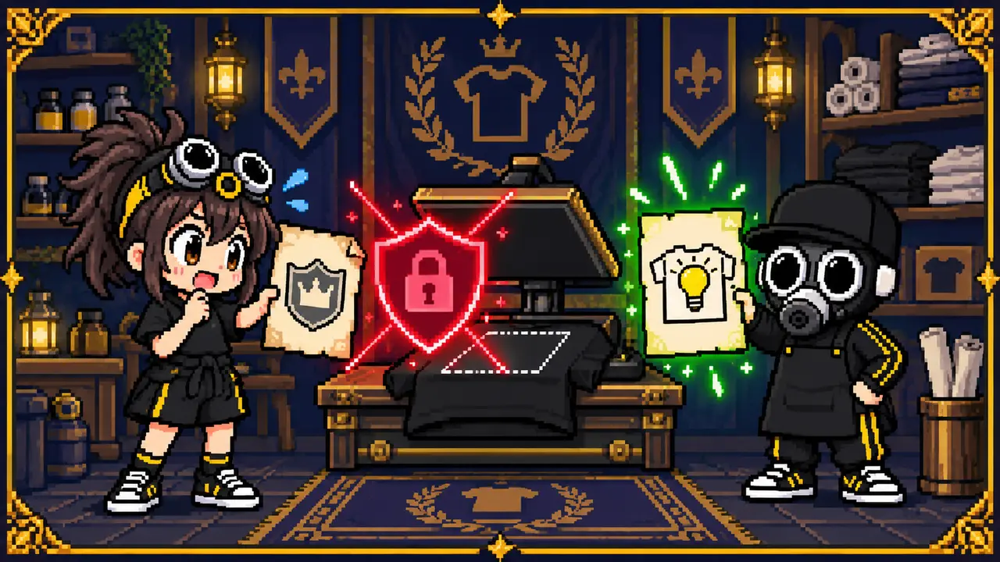
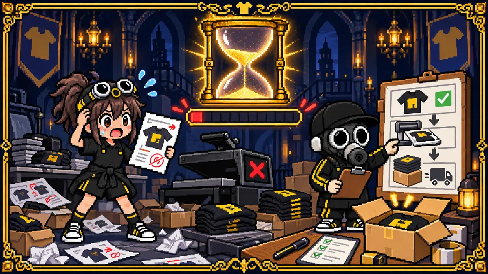

失敗の多くは、注文前の確認で防げます
オリジナルTシャツの失敗は、プリント作業だけが原因とは限りません。元画像の状態、仕上がりサイズの伝え方、ボディの素材、枚数に合わない加工方法など、制作前の小さな認識違いから起こります。
ここでは、ハダオジ店長とゆうが10の失敗ダンジョンを攻略。各項目で「何が起きるか」と「どう伝えれば防げるか」をセットで確認します。

分からないことを全部決めてから相談する必要はありません。用途・枚数・希望日・使いたい画像が分かれば、一緒に整理できます。
失敗1：画像を大きくしたら粗くなった

LINEで送ったスクリーンショットや、SNSから保存した小さな画像は、画面ではきれいに見えても大きなプリントでは輪郭がギザギザになることがあります。小さい画像を引き伸ばしても、元にない細部は増えません。
失敗2：思ったより小さい・位置が低い

「胸に大きめ」「背中の真ん中」だけでは、完成像が人によって変わります。同じ横25cmでも、SサイズとXLサイズでは見え方が違います。配置はプリント幅と、襟や脇からの距離で共有するとズレを減らせます。
失敗3：画面で見た色と仕上がりが違う

スマホやモニターは光で色を見せますが、Tシャツはインクと生地の反射で見えます。画面の明るさ、ボディ色、素材、白インクの下地、加工方法により、蛍光感や淡い色、黒に近い階調は印象が変わります。
失敗4：枚数とデザインに合わない方法を選んだ

加工方法には向き不向きがあります。少数のフルカラーにシルクスクリーンを選ぶと製版代の割合が大きくなり、同じ1色を多数作るのにDTFを選ぶと、条件によっては単価や風合いで不利になることがあります。
失敗5：襟や縫い目に近く、プリントが欠けた

熱プレスや印刷は、できるだけ平らな面で行います。襟、脇、ポケット、ファスナー、厚い縫い目の近くは圧力が均一になりにくく、欠け・圧着不足・段差の跡が起こることがあります。袖をぐるりと一周するような配置も、設備やボディ形状によってはできません。
失敗6：生地・サイズ・洗濯後の印象が想定外

綿Tシャツとドライ素材では、肌触り・光沢・透け感・プリントのなじみ方が違います。同じ表記サイズでも品番ごとに身幅や丈は異なり、乾燥機などの扱いで縮みやプリントへの負担が生じることもあります。
失敗7：画像の白い背景まで印刷された

画像の背景が白く見えていても、透明とは限りません。JPEG画像やスクリーンショットは基本的に背景を持つため、濃色Tシャツへプリントすると、デザインの周囲に白い四角がそのまま出ることがあります。
失敗8：細い線や小さな文字が潰れた

画面を拡大すれば見える細線や小文字でも、インク・フィルム・生地には再現できる限界があります。特にかすれた書体、細い抜き線、複雑な装飾は、縮小すると潰れたり消えたりしやすくなります。
失敗9：権利のある画像で制作できなかった

インターネットで見つけた画像、企業やチームのロゴ、漫画・ゲームのキャラクター、著名人の写真などは、自由にTシャツへ使えるとは限りません。個人で着る目的でも、制作会社が権利確認をできない場合は注文を受けられないことがあります。
失敗10：直前の変更で希望日に間に合わなかった

Tシャツの取り寄せ、データ確認、見積もり、入金、プリント、検品、発送にはそれぞれ時間が必要です。注文後に枚数・サイズ・デザイン・加工位置が変わると、材料の再手配やデータの作り直しが発生し、当初の納期に間に合わなくなることがあります。
注文前に送ると失敗を減らせる6項目

全部が決まっていなくても、「ここまでは決まっている」と送ればいいんだね。分からない部分は相談しながら決められる！
MISSION COMPLETE!
まだ何も決まっていなくても大丈夫
画像1枚と「こんなTシャツを作りたい」から、一緒に失敗しにくい形へ整理します。少ない枚数でも気軽にご相談ください。
無料見積もりへ ▶裏公式LINEで相談する▶実際のウェアプリント相談・制作経験をもとに内容を確認しています。最終更新：2026年9月8日 運営者・編集方針